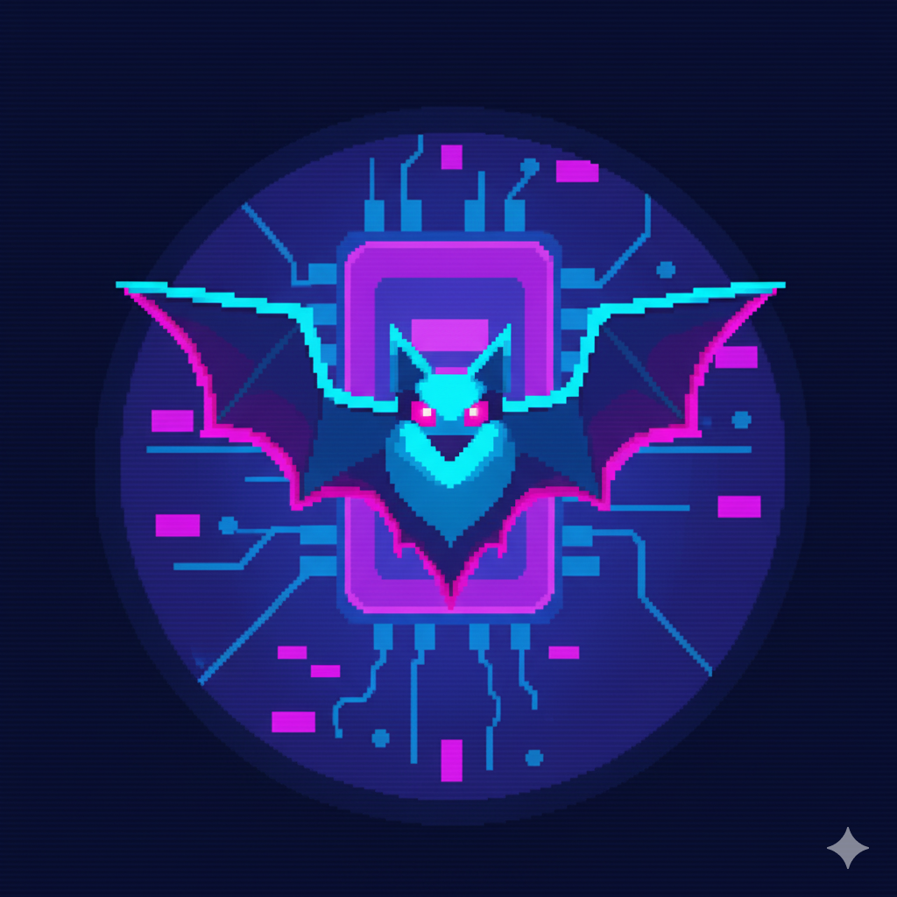

cavebatsofware
Grant DeFayette · maintainer · GitHub org
The neon-bat-on-circuit-board mark belongs to the
maintainer's org
, not the Riposte product. It appears on GitHub and on the upstream
landing.html
template.
Don't drop it onto Riposte UI.